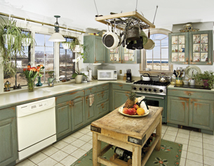

Module 5—Acids and Bases
 Reflect and Connect
Reflect and Connect

© Judson Abts/shutterstock
Using the Internet or other sources of information, identify a substance found in a kitchen that demonstrates the properties of an acid-base indicator.
Design and perform an experiment that demonstrates how this substance acts as an indicator. Remember to include suitable experimental controls in your design.
Prepare a demonstration that shows how the substance you identified could be used to predict the pH of various solutions found in your home. Use a digital camera or video camera to record the experiment you performed.
Save a copy of your work to your course folder. Your finished work should include evidence of your experimental design, the data collected, and your results. You may wish to share your work with your classmates or some other people and make revisions based on their comments.